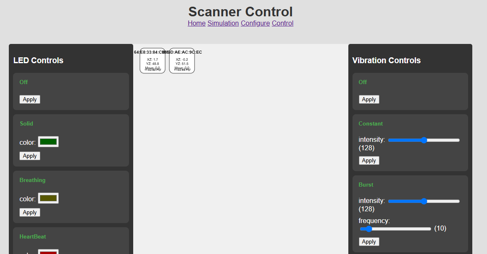

Control Page Manual¶
This guide explains how to use the web-based Control Page to monitor and configure the ESP32 scanners in real-time.
Overview¶
The Control Page provides a centralized interface for interacting with all active scanner devices. It is divided into two main sections:
- Scanner Grid (Left): A visual representation of all scanners that have connected to the server in the last 5 minutes.
- Control Panels (Right): A set of dynamic controls for configuring the LED and vibration behaviors of the selected scanners.
1. Monitoring Scanners¶
The scanner grid displays a box for each active scanner. Each box shows:
- Scanner Name: The unique identifier for the device (e.g.,
Scanner-84:CB:84). - Movement Data: Real-time data from the onboard accelerometer, including angles and total movement since the last update.
- Last Seen Timestamp: The local time of the last message received from the scanner.
The grid automatically refreshes every 5 seconds to show the latest data and include any new scanners that have come online.
2. Selecting Scanners¶
To configure a device, you must first select it.
-
Single Selection:
- Click and drag to draw a selection box around the scanner you want to select.
- A selected scanner will be highlighted with a green border.
Multiple Selection: 1. Hold down the
Shiftkey. 2. While holdingShift, click and drag a selection box. You can repeat this to add multiple, non-adjacent scanners to your selection. Any scanner that falls within the selection rectangle will be added to the current group of selected scanners.
|  |
|---|
| Control panel |
3. Configuring Behaviors¶
Once you have one or more scanners selected, you can use the control panels on the right to send them commands.
The controls are separated into LED Controls and Vibration Controls.
Applying a Behavior¶
- Choose a Behavior: Find the form corresponding to the behavior you want to set (e.g.,
HeartBeatfor LEDs orBurstfor vibrations). - Adjust Parameters:
- For behaviors with a color parameter, click the color swatch to open a color picker.
- For behaviors with numeric parameters (like
intensity,frequency, orperiod), use the sliders to adjust the values. The current value is displayed next to the slider.
- Apply: Click the “Apply” button within that behavior’s form.
The configuration will be sent to all currently selected scanners. After a successful command, the selection is automatically cleared to prevent accidental re-configuration.
Example: To make two scanners pulse with a red light, you would:
1. Hold Shift and drag a box to select both scanners.
2. Go to the “LED Controls” panel.
3. Find the “HeartBeat” form.
4. Set the color to red (#FF0000).
5. Adjust the period slider to your desired interval.
6. Click the “Apply” button in the “HeartBeat” form.